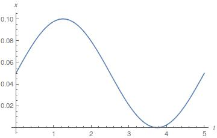

Keyword: Machine dynamics, Non-linear control, Mathematica, Arduino
The classic game Shoot-the-Moon has interesting dynamics despite its simple structure, consisting of a steel ball rolling on two cylindrical rods. The two sloped rods are hinged at the lower ends and allowed to freely slide in a slot at the higher end. The ball can amazingly roll upward along the rods under carefully manipulation of the rods. There is also an interaction between ball rotation and translation that cause the ball to “shoot” (quickly accelerate).
The kinematics of the system are developed for the Shoot-the-Moon and then equations of motion are derived using Lagrangian approach. The constrain is that the ball has to be attached to the rod and the system is non-holonomic.
Two controllers based on the dynamic model are created. The first one is called Linearized Position Regulator which uses a local linearizion at an equilibrium point of the dynamics. Both controllers are simulated at 100Hz. What this controller can do is given then current location of the ball and a random target position along the rod, the controller will try to make the ball to stabilize around the target position by maneuvering the rod. The control loop for this method is like this:
"x(t)" is a 2x1 matrix consists of the position and the velocity of the ball. "u(t)" represents the angle between the rod. The "A", "B" and "C" terms shown in the loop are used to construct the transfer function below:
The control loop above indicates a full state feed back control for a linearized system, so "r = 0" and "u(t) = K*x(t)" which is the control law for the system. By placing poles, we can get the gain and apply the control law to the system. Two pictures below are the simulation results using the Linearized Position Regulator method:
The figure on the left is the reference trajectory of the ball on the rod. If the ball is at origin of the rod, then the controller will try to push the ball to reach the reference position which is shown in the figure on the right hand side.
The second one is called Position Tracking Controller and what it does is that given a position on the rod, the controller can return a desired acceleration by changing the rod angle. The controll loop for this method is like this:
Block "T" here represents the transfer function which takes a reference acceleration with feedback and returns a theta which is the angle between the rods. Two pictures below are the simulation results using the Position Tracking Controller method:
From the simulation results just listed above, it can be noticed that Position Tracking Controller has faster response than Linearized Position Regulator meaning it can allow the ball to do complex motion on the rod, for example a sinusoidal motion. However, Linearized Position Regulator is much more reliable because the Position Tracking Controller includes the sub-process of finding a root of a non-linear equation and it cannot always guarantee to return a solution. Therefore, it makes Position Tracking Controller difficult to balance the the ball when it is far away from the origin.
The mechanical design of the system is based on using stepper motor, pulleys and belts. The stepper motor is NEMA 23 7.4V unipolar stepper motor which has 200 steps to finish one revolution. I used DRV8835 as the H-brdige to interface the motor with my microcontroller(Arduino Mega 2560) and I programmed the microcontroller to be able to control the stepper motor to do half-step, meaning the it takes 400 steps for motor to finish one revolution.
There are two pulleys in the system, one is attached to the motor and another one is the passive pulley. A timing belt is attached on those pulleys and the space between the pulley is adjusted so that it would cause enough tension on the belt. Two rods were attached to the belt while one is attached to the upper part of the belt and the other one is attached to the lower part of the belt. This configuration would allow the rod to move symmetrically in opposite direction when the motor is spinning.
When all the parts of the system are well positioned, I sample the simulation trejactory and feed it into the motor. The video below shows my result.
I am still working on this project since I have just achieved open loop control. Closing the loop would need some feedback systems to return the position on real time. There are two solutions. The first one is using Pololu QTR-8RC Reflectance Sensor Array. This sensor array is mainly used for a line-following. Each sensor on the sensor array can measure the distance between the sensor and the object which is put in front of the sensor. If such sensors are evenly distributed along the rod, it can detect the position of the ball, though it requires some estimator to estimate the ball position when its center is in between two sensors. The second one is using computer vision techniques. This would require a camera with high frequency up to 100Hz. Since the ball is made of metal and it is reflective, the system has to be correctly set up so that the ball features can be extracted.
This is the github link to my source code.
Go BackCredit: This website is based on a theme created by Start Bootstrap